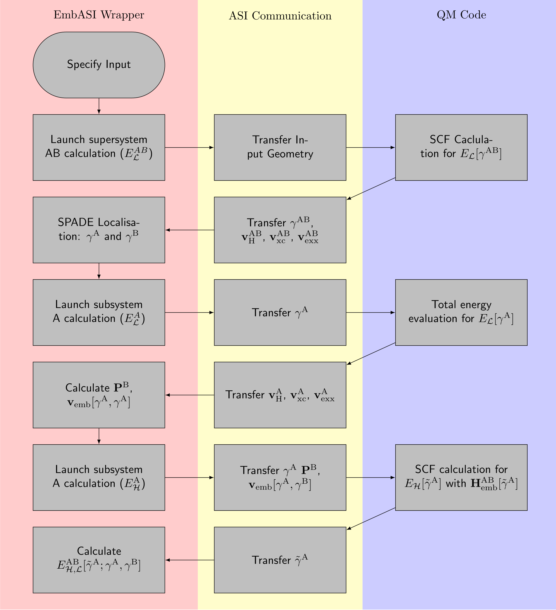

Developer Guide to Implementing EmbASI
Introduction
EmbASI is designed as a minimal workflow for abstracting the tasks associated with embedding to the Pythonic wrapper. The modification to the host codebase should be small, but some familiarity with your codebase is desirable to implement the required control flow mechanisms.
Where possible, we have provided template routines in <EmbASI_ROOT>/templates/fortran/qm_embedding.f90
which wrap around the expected import and export routines for each
matrix quantity.
Atomic Simulation Interface (ASI) API
ASI is a C-based API which manages the transfer of data structures to and from the QM driver. The vast majority of development work required to implement EmbASI will involve implementing the C-based callback infrastructure of ASI. Template routines and an installation guide are included in the ASI API documentation. Other than stating where certain matrix dimensions are stored in your codebase, the callback routines should hopefully work out of the box with the templates provided.
Implementing the EmbASI Workflow
The following is a guidance for implementing the projection-based embedding scheme of Manby et al. [MSGM12] The workflow below shows the calling pattern for each respective supersystem/subsystem as well as the quantities expected for each total energy calculation. [BSV+]
{kind=link}

- The projection-based embedding procedure calls the QM driver to:
Perform a full SCF calculation for the whole supersystem (AB) at the low-level of theory (\(\mathcal{L}\)).
Perform a total energy evaluation for the embedded subsystem (A) at the low-level of theory with the localised density matrix (\(\gamma^{\mathrm{A}}\)).
Perform a SCF calculation for the embedded subsytem at the high level of theory (\(\mathcal{H}\)) subject to the embedded Hamiltonian (\(\mathbf{H}^{\mathrm{AB}}_{\mathrm{emb}}[\tilde{\gamma}^{\mathrm{A}}]\)).
Expected Matrix Exports
At each calculation stage, it is expected that upon completion, four matrices are output to the EmbASI wrapper:
The total overlap matrix (\(\mathbf{S}^{\mathrm{AB}}\))
The one-electron Hamiltonian (\(\mathbf{h}_{\mathrm{core}}\)).
The two-electron potential (\(\mathbf{v}_{\mathrm{2e}}\)).
The total Hamiltonian (\(\mathbf{H}_{\mathrm{tot}}\)).
The density matrix for the appropriate subsystem (\(\mathbf{\gamma}^{\mathrm{AB}}, \mathbf{\gamma}^{\mathrm{A}}, \tilde{\mathbf{\gamma}}^{\mathrm{A}}\), where \(\tilde{\gamma}\) represents the converged density matrix evaluated at the high-level of theory).
To integrate these routines within your workflow, the following routines
from the qm_embedding template should be added in the following parts of your code:
export_overlap: after the construction of the overlap matrix.
export_allH: after the final interation of the SCF cycle.
export_densmat: after the final interation of the SCF cycle.
Expected Matrix Imports
- Two import callbacks should be integrated into the SCF cycle:
import_EmbASI_densmat: Imports the externally constructed density matrix. This routine should be called the construction of the terms required for the Hamiltonian.set_embedding_H: Imports the embedding potential and the projection matrix and adds them to your Hamiltonian. This statement should be added before the entry of the Hamiltonian into the eigensolver routine.
Keyword Modification
At the wrapper level, callbacks should only be registered when they are required. However, implementing the following keywords should be done to enable extra control flow mechanisms and error checking.
At present, the keyword qm_embedding_calc is used as an input to
modify the control flow of the calculation. The expected arguments for
this keyword are:
qm_embedding_calc = 1: Full SCF with no modification.
qm_embedding_calc = 2: Total energy calculation that skips the SCF cycle. The total energy evaluation for the low-level reference of the embedded subsystem (\(E_{\mathcal{L}}[\gamma^{\mathrm{A}}]\)) requires only the total energy corresponding to \(\gamma^{\mathrm{A}}\). In effect, this corresponds to running the SCF cycle for a single iteration and calculating the total energies as the expectation value of the input Hamiltonian.
qm_embedding_calc = 3: Full SCF with the embedded Hamiltonian. This keyword indicates thatset_embedding_Hshould be invoked for the given QM driver call.
References
Gabriel Bramley, Pavel Stishenko, Oscar van Vuren, Volker Blum, and Andrew James Logsdail. A general pythonic framework for DFT-in-DFT and WF-in-DFT embedding.
Frederick R. Manby, Martina Stella, Jason D. Goodpaster, and Thomas F. III Miller. A simple, exact density-functional-theory embedding scheme. Journal of Chemical Theory and Computation, 8(8):2564–2568, 2012. doi:10.1021/ct300544e.